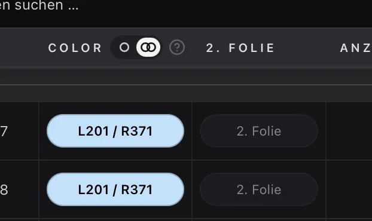
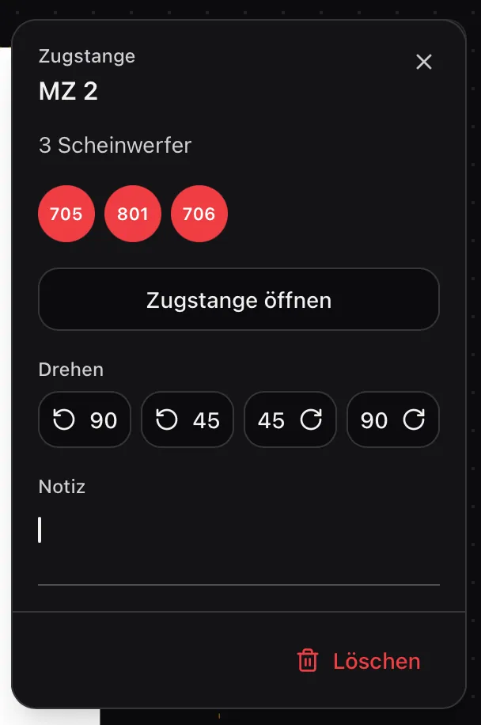
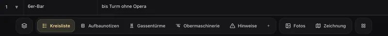

10. Oktober 2026
Eigene Farben, zweite Folie, ein neuer Zeichnungs-Editor
Discord-Server, weil das ja modern ist :)
Ab sofort gibt es einen Discord-Server für LuxStage. Dort können wir uns untereinander austauschen, Fehler melden und Ideen für neue Funktionen sammeln. Im Kanal „ankündigungen-und-changelog" erfahrt ihr außerdem als Erste, was neu ist. Hier kommt ihr rein: https://discord.gg/4GRUsjMDvn
Neues in der App
Seit dem letzten Mal habe ich vor allem an der Zeichnung und an den Farbfolien gearbeitet.
Farbfolien
Neben den Bühnen-Vorlagen gibt es jetzt die Vorlage „Farben". Dort könnt ihr alle Farben eures Hauses bearbeiten, auch die mitgelieferten Lee- und Rosco-Filter mit ihren zusammengehörigen Nummern. Eigene Farben wie Frost-Filter könnt ihr selbst anlegen, Frost und Diffusion erscheinen als Schraffur. Über 750 Standardfarben sind schon drin. Außerdem lässt sich in der Kreisliste neben Color eine zweite Spalte „2. Folie" einblenden, einfach über das kleine Icon im Spaltenkopf.

Zeichnungs-Editor
Der Editor in der Web-App sieht jetzt moderner aus. Die Werkzeuge schweben als schlanke Leiste am Rand und zeigen ihren Namen, wenn ihr drüberfahrt. Die Eigenschaften des gewählten Elements stehen in einem Panel rechts statt in einer Leiste unten. Linien, Rechtecke, Kreise und Texte lassen sich per Griff drehen, und die Zeichnung lässt sich zoomen (Mausrad, Pinch oder Plus/Minus) und verschieben. Mehrere markierte Elemente könnt ihr ausrichten (links, rechts, mittig, oben, unten) oder mit gleichem Abstand verteilen. Das Raster ist dabei dreimal feiner.

Im PDF füllt die Zeichnung jetzt die ganze Seite. Ist sie breit, kippt die Seite von allein ins Querformat.
Obermaschinerie und Gassentürme besser bestücken
Neben den Gassentürmen und der Obermaschinerie steht jetzt die Kreisliste als Sidebar, mit Gerät, Farbe und Notiz jedes Kreises. Ihr könnt erst den Slot und dann den Kreis anklicken oder den Kreis einfach an die richtige Stelle ziehen. Fehlt ein Kreis, lässt er sich über die Suche anlegen.
Navigation
Braucht ihr mehr Platz für die Kreisliste? In den Einstellungen unter Darstellung könnt ihr zwischen Seitenleiste und einer Leiste am unteren Rand wählen, dem Dock. Die Wahl gilt für euer Konto auf allen Geräten.

iOS
Der gewählte Eos-User in den Apps bleibt jetzt gespeichert und springt nicht mehr auf User 1 zurück. Die Verbindung zum Pult läuft stabiler, Makros und Paletten laden schneller, und ein Hinweis in den Einstellungen hilft, Konflikte mit der ETC-RFR-App zu vermeiden. Außerdem gibt es in den Kontoeinstellungen der Web-App einen Feedback-Knopf. Wünsche, Ideen und Fehler landen so direkt bei mir.
Android
Die Android-App ist nun im Betatest. Leider muss der 14 Tage laufen, erst dann kann ich die App veröffentlichen. Aber: Sie kommt!
Wenn euch etwas fehlt oder nervt, schreibt mir einfach.